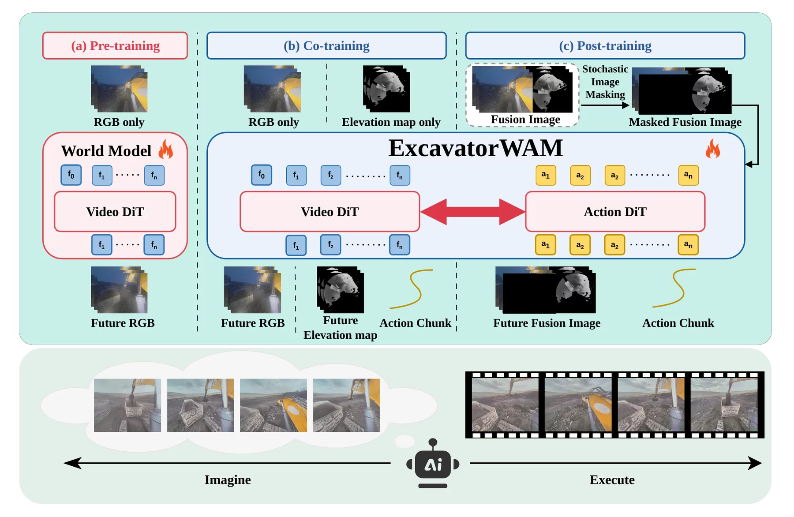
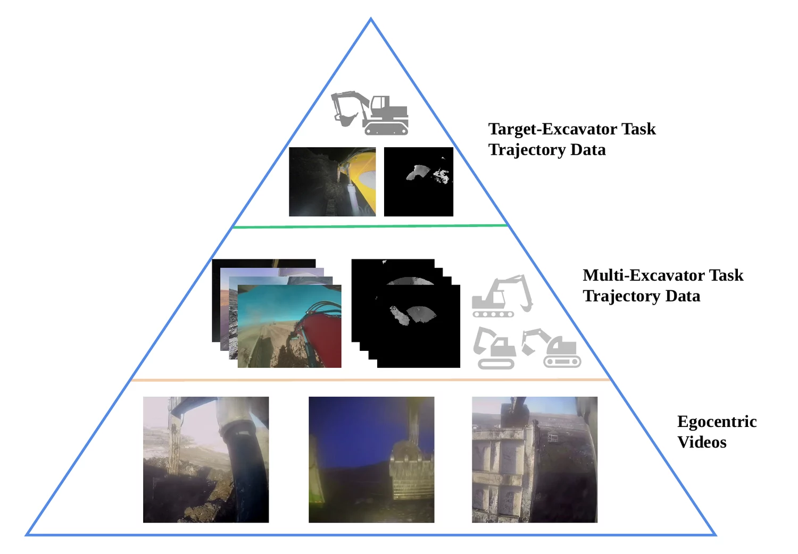
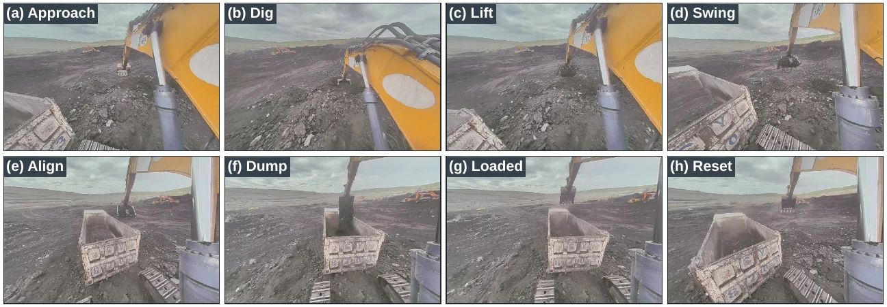
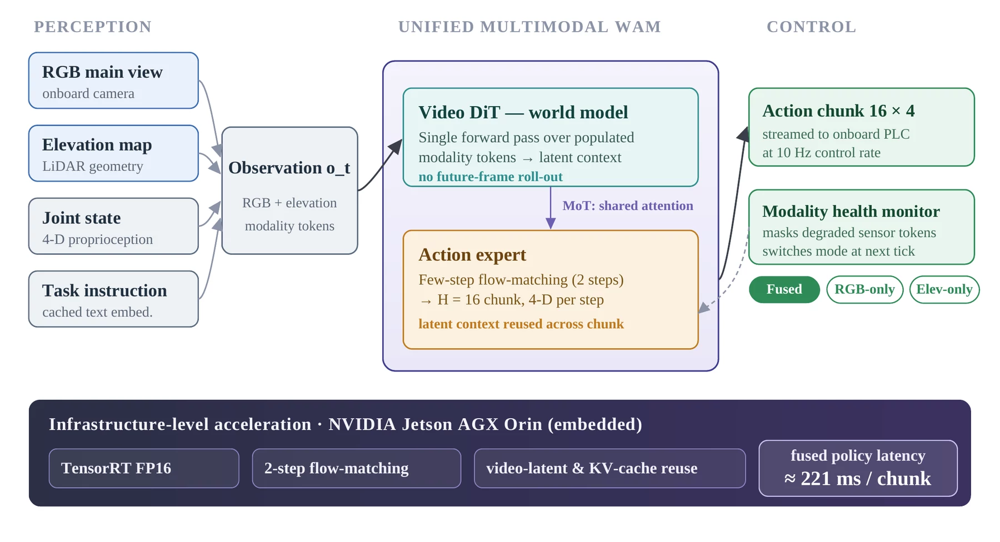
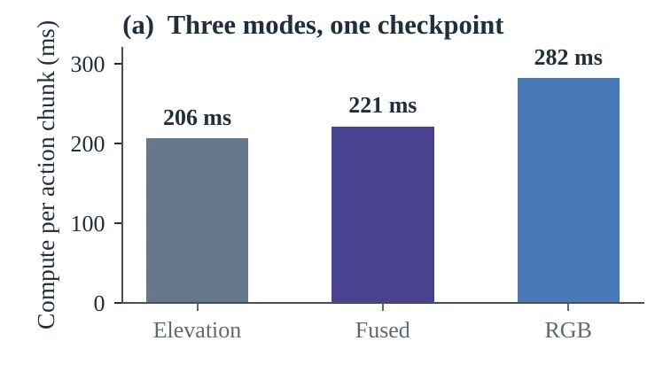
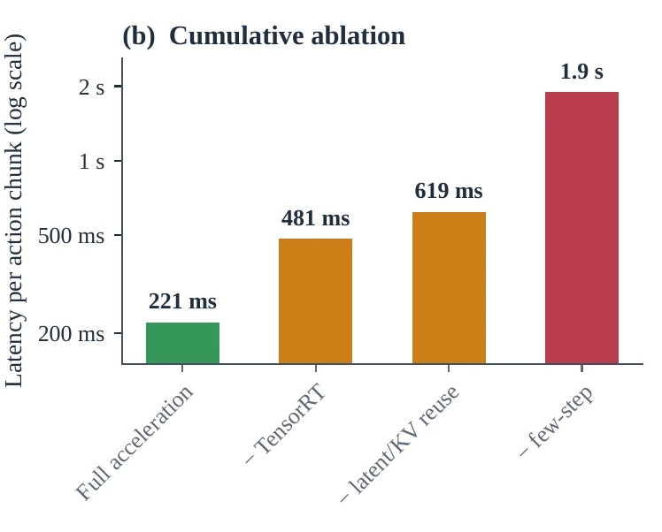

Local appearance is not enough
The main-view camera captures bucket–soil interaction, but global pile and truck geometry extends beyond its field of view and can be obscured by dust, darkness, or occlusion.
Full-cycle autonomous loading
One policy combines local RGB appearance, global LiDAR geometry, and proprioception to dig, lift, slew, and dump on a real full-size excavator.
Synchronized local appearance and robot-centric geometry during field operation.
Empty-bucket rate
Average time per bucket
Fused action chunk
Inference speedup
Dataset overview
The training corpus spans multiple machines, onboard viewpoints, illumination conditions, material appearances, and real operating environments.
Representative frames from excavation-domain video used by the three-tier training recipe.
System overview
ExcavatorWAM couples future visual prediction with action generation while retaining one end-to-end policy across digging, lifting, slewing, and dumping.
The main-view camera captures bucket–soil interaction, but global pile and truck geometry extends beyond its field of view and can be obscured by dust, darkness, or occlusion.
ExcavatorWAM combines RGB, a LiDAR-derived bird's-eye elevation map, and proprioception. It jointly learns future prediction and action generation, then directly emits action chunks at inference.
A World–Action Model performs end-to-end loading on a 49-ton excavator.
RGB and LiDAR elevation futures jointly shape a shared visual–dynamical representation.
Two-step flow matching and cache reuse deliver a 16-step action chunk in 221 ms.
Method
Future frames supervise representation learning during training; inference directly generates actions without rolling out future video.

Training
Supervision becomes richer and more machine-specific at each stage, while the volume decreases by one order of magnitude.

Adapt the video backbone to in-domain visual dynamics.
Co-train future prediction and actions for each visual modality.
Fine-tune fused inputs with stochastic modality masking.
Evaluation

| Method | Empty bucket | Time / bucket |
|---|---|---|
| Diffusion Policy | 40% | 24 s |
| RGB only | 50% | 32 s |
| Elevation only | 28% | 25 s |
| w/o pretraining | 46% | 38 s |
| w/o modality masking | 47% | 33 s |
| ExcavatorWAM | 25% | 24 s |
| Method | Empty bucket | Time / bucket |
|---|---|---|
| Rule-based | 15% | 32 s |
| Diffusion Policy | 23% | 22 s |
| w/o modality masking | 25% | 20 s |
| ExcavatorWAM | 14% | 18 s |
Deployment
A 16-step action chunk spans 1.6 seconds at 10 Hz, leaving substantial compute margin on the Jetson AGX Orin.



Real-machine demo
Synchronized RGB, elevation, and robot-centric terrain views show the deployed system completing the loading cycle after dark.
Presentation
A concise presentation of the multimodal model, simulation evaluation, and real-machine experiments.
Citation
The final citation will be added when the paper is publicly released.